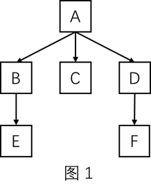
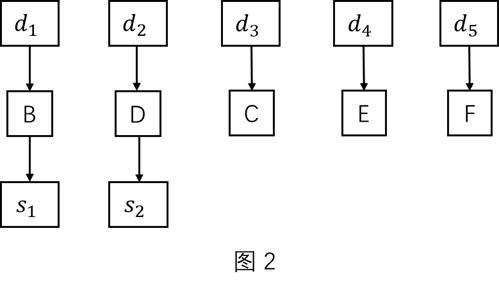
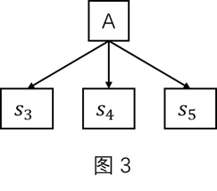
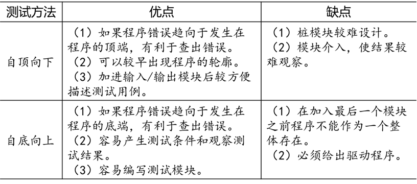

集成测试
[TOC]
概念
定义
集成测试是在单元测试的基础上将多个模块组合在一起进行测试的过程，主要检查各个软件单元之间的相互接口是否正确，是介于单元测试与系统测试之间的过渡阶段，是单元测试的扩展和延伸。
不经过单元测试的模块不应进行集成测试。
通过单元测试和集成测试仅能保证软件开发的功能得以实现，不能确认在实际运行时能否满足用户的需求。
主要任务
集成测试使用黑盒测试方法测试集成的功能，并对以前的集成进行回归测试。
- 将各模块连接起来时检查各个模块相互调用时、数据穿越模块接口时是否会丢失；
- 各子功能组合起来能否达到预期要求的各项功能；
- 一个模块的功能是否会对其他模块的功能产生不利影响；
- 全局数据结构是否有问题，是否会被异常修改；
- 单个模块的误差累积起来是否会放大，从而达到不可接受的程度。
层次
对于传统软件，集成测试划分为 $3$ 个层次，即模块内集成测试、子系统内集成测试和子系统间集成测试。
对于面向对象的应用系统，可以分为两个阶段，即类内集成测试和类间集成测试。
原则
- 所有公共接口都要被测试到；
- 关键模块必须进行充分的测试；
- 集成测试应当按一定的层次进行；
- 集成测试应当尽早开始，并以总体设计为基础；
- 当接口发生修改时，涉及的相关接口必须进行再测试。
集成测试策略
在对两个以上的模块进行集成时需要考虑和周围模块的关系，因此需要设计若干辅助测试模块。
辅助测试模块分为以下两种：
- 驱动模块（Driver）：用来模拟被测模块的上级调用模块，功能比真正的上级模块简单得多，仅仅是接受测试数据，并向被测模块传送测试数据，启动被测模块，回收并输出测试结果。
- 桩模块（Stub）：用来模拟被测模块在执行过程中所要调用的模块，接受被测模块输出的数据并完成它所指派的任务。
假设被测程序的结构如图 $1$ 所示，由 $6$ 个模块组成：

非渐增式集成
非渐增式集成测试采用一步到位的方法进行测试，即对所有模块进行个别的单元测试后按程序结构图将各模块连接起来，把连接后的程序当作一个整体进行测试。
在进行单元测试时，根据在结构图中的地位对模块 B 和 D 配备了驱动模块和桩模块，对模块 C、E、F 只配备了驱动模块，如图 $2$；对主模块 A 只配备了 $3$ 个桩模块来模拟被它调用的 B、C 和 D，如图 $3$。


对它们分别进行单元测试以后，再按照图 $1$ 所示的结构图连接起来进行集成测试。
渐增式集成
基本思路是首先将各模块独立地进行单元测试，然后将这些模块逐步组装成较大的系统，边组装边测试，以发现在组装时产生的错误，最终组装成一个符合要求的软件系统。
按照不同的次序实施，有下面两种测试策略：
自顶向下增量式集成测试
该测试方法是按照程序结构图，首先利用桩模块测试主模块，通过测试后用实际的模块替代桩模块进行测试，重复以上步骤，直至替代了所有的桩模块。
在测试过程中，决定模块测试次序的基本原则如下：
（1）尽早测试关键的模块，即比较重要、比较复杂的可能出错或含有新算法的模块；
（2）尽早测试包含输入、输出功能的模块。
又可以分为：
- 深度优先策略
- 广度优先策略
自底向上增量式集成测试
该测试方法是按照程序结构图，首先利用驱动模块测试最底层模块，通过测试后用实际的模块替代驱动模块进行测试，重复以上步骤，直至替代了所有的驱动模块。
在测试过程中，决定测试次序的基本原则是该模块的所有下级模块都被测试过了。
两种测试方法的比较：

其他集成测试策略
三明治集成测试
三明治集成测试是将自顶向下测试和自底向上测试有机结合起来，采用并行的自顶向下、自底向上集成方式形成改进的三明治方法。采用持续集成的策略。
核心系统先行集成测试
先对核心软件部件进行集成测试，在测试通过的基础上再按各外围软件部件的重要程度逐个集成到核心系统中。
高频集成测试
指同步于软件开发过程每隔一段时间对开发团队的现有代码进行一次集成测试。
面向对象的集成策略
传统的集成测试通过集成完成的功能模块进行测试，而对于面向对象程序，相互调用的功能分布在程序的不同类中，根本无法在编译不完成的程序上对类进行测试；此外面向对象程序具有动态性，程序的控制流往往无法确定，因此只能对整个编译后的程序做基于黑盒技术的集成测试。
对象交互
对象交互是一个对象向另一个对象发出请求，接收者执行一些操作来完成这个请求。
类与类交互的方式（类接口）主要有：
- 公共操作将一个或多个类命名为正式参数的类型；
- 公共操作将一个或多个命名作为返回值的类型；
- 类的方法创建另一个类的实例；
- 类的方法引用某个类的全部实例。
对象交互的测试根据类的类型可以分为原始类测试、汇集类测试和协作类测试。
原始类测试使用类的单元测试技术。
汇集类测试
汇集类：这些类在说明中使用对象，但是实际上从不和这些对象中的任何一个进行协作，即从不请求这些对象的服务。汇集类会表现出以下一个或多个行为：
- 存放这些对象的引用，通常表现程序中对象之间的一对多的关系；
- 创建这些对象的实例；
- 删除这些对象的实例。
可以使用测试原始类的方式来测试汇集类，测试驱动程序要创建一些实例，作为消息中心的参数被传送给一个正在测试的集合。测试用例主要目的是保证那些实例被正确加入集合并被正确地从集合中移出，测试用例说明的集合会对其容量有所限制。假如在实际应用中可能要加入 30-50 条信息，那么生成的测试用例至少要增加 50 条信息。
协作类测试
这种类在它们的一个或多个操作中使用其他对象，并将其作为实现中不可缺少的一部分。
测试步骤
面向对象的集成测试分两步进行，先静态测试，再动态测试。
设计测试用例可参考下列步骤：
（1）先选定检测的类，仔细给出类的状态和相应的行为、类或成员函数间传递的消息、输入或输出的界定等；
（2）确定覆盖标准；
（3）利用结构关系图，确定待测类的所有关联；
（4）根据程序中类的对象构造测试用例，确认使用什么输入激发类的状态、使用类的服务和期望结果。
常用测试技术
抽样测试
首先定义测试总体，然后定义一种方法，从测试用例总体中选择哪些被构建、哪些被执行。
正交阵列测试
正交阵列测试提供了一种特殊的抽样方法。正交阵列矩阵中的每一列代表一个因素，即一个变量代表程序中的一个特定的类状态，特定的状态数构成了级别。在正交阵列中，将各个因素可能组合成配对方式。
例如有 $3$ 个因素 A、B、C，每个因素有 $3$ 个级别 1、2、3，共有 27 种可能组合情况，即 A 的 $3$ 种情况 $\times$
B 的 $3$ 种情况 $\times$ C 的 $3$ 种情况，假定一个给定级别仅出现 $2$ 次，那么就只有下表所示的配对组合方式。
| | A | B | C |
| :—: | :—: | :—: | :—: |
| 1 | 1 | 1 | 3 |
| 2 | 1 | 2 | 2 |
| 3 | 1 | 3 | 1 |
| 4 | 2 | 1 | 2 |
| 5 | 2 | 2 | 1 |
| 6 | 2 | 3 | 3 |
| 7 | 3 | 1 | 1 |
| 8 | 3 | 2 | 3 |
| 9 | 3 | 3 | 2 |正交阵列测试使用平衡设计，每个配对级别仅出现一次。
参考资料：
[1] 秦航，杨强 . 软件质量保证与测试(第 2 版)[M] . 北京：清华大学出版社，2017